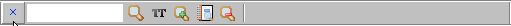

Поиск указанного текста
Password Safe позволяет производить поиск элементов по заданному тексту. Это удобно, если вы не помните имя элемента, но знаете, что в нем содержится, например, элемент, содержащий в заметках имя Маша.
Для поиска в открытом контейнере нажмите Ctrl-F (или Изменить->Поиск...). Над строкой состояния появится панель поиска, похожая на ту, что изображена на рисунке:

Для начала поиска достаточно ввести нужный текст и нажать Enter или щелкнуть по значку с лупой, расположенному справа от поля ввода. Количество найденных элементов (если такие есть) будет отображено в правой части панели, а первый найденный элемент будет выделен и получит фокус. Для перехода к следующему найденному элементу нажмите Enter (или нажмите кнопку с лупой). После того, как все элементы будут пройдены, Password Safe начнет поиск сначала.
Нажатие на клавишу F3 повторяет поиск. Для перехода к следующему элементу, удовлетворяющему заданному условию, достаточно нажать F3. При одновременном нажатии Shift и F3, выделение перейдет на предыдущий найденный элемент контейнера. То же самое произойдет, если нажать на кнопку с лупой удерживая клавишу Shift.
- Для закрытия панели поиска нужно нажать на 'x' слева от поля ввода.
- По умолчанию поиск является регистронезависимым. Для переключения между регистрозависимым и регистронезависимым поиском щелкните по кнопке с надписью "AA" (при переключении на регистрозависимый поиск надпись изменяется на "Aa").
- Если требуется указать дополнительные параметры поиска (ограничить подмножество элементов или выбрать отдельные поля элементов) , щелкните по значку "...".
- Для создания отчета о найденных элементах щелкните по значку
 .
. - Для очистки поля с искомым текстом нажмите кнопку, на которой изображен ластик.